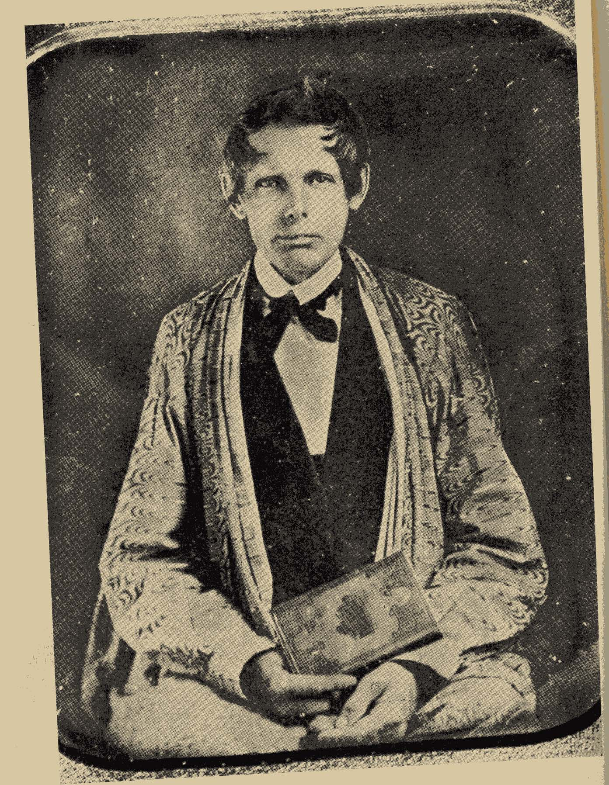

"Worcester v. Georgia" is a landmark case that was heard by the United States Supreme Court in 1832. The case involved Samuel Worcester, a missionary, and Elizur Butler, a printer, who were arrested in the state of Georgia for residing in Cherokee territory without a license from the state. The issue at the heart of the case was whether Georgia's extension of its laws to Cherokee territory and the arrest of Worcester and Butler violated the Constitution, treaties, or laws of the United States. 